귀한 걸음 해주셔서
감사합니다
1 자료가 세팅된 자리에 착석 부탁드립니다
2 안쪽부터 앉아 주시면 감사하겠습니다
3 휴대폰은 무음으로 부탁드립니다
원장과 강사를 위한 AI 강연
2026. 11. 4 (수) | 11. 8 (일) | 11. 9 (월) 세종 너희가 꽃이다 학원 고3관
우리 학원과 강의를 위해,
AI 어디까지 활용해 볼 수 있을까?
너희가 꽃이다 학원 원장 권나윤
외부 교육 100시간 | 현장 활용 5,000시간+
2025년과 2026년, 현재까지
이 강의를 기획하게 된 배경
2019년부터 2026년까지
2019 · 2020
교재 강의. 한글 매크로로 교재를 구성하고 디자인하던 때
2026
6년 만에 다시 서는 외부 강의
AI 세미나를 접하기 시작하며
2025년 AI Conference
1
승연 님
AI부사수 팀 파트너
2
이림 님
이미커피 대표 · 공간브랜딩 팀 파트너
3
강양석 님
『뉴로심볼릭 AI』 저자 · 딥스킬 대표
세 연사의 공통 키워드는 「AI에 대체되지 않는 사람」이었습니다.
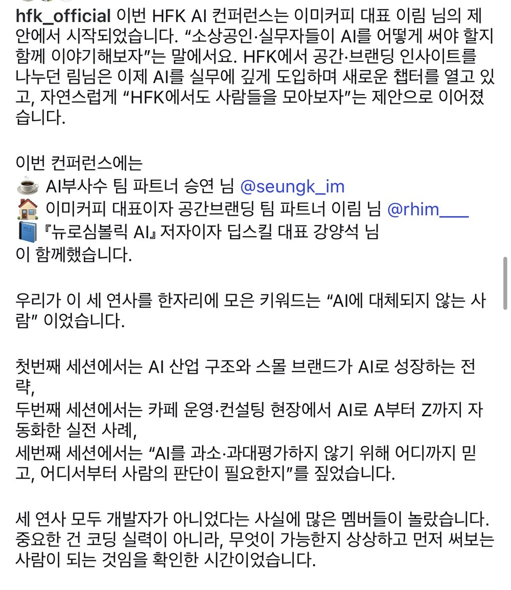
AI 세미나를 접하기 시작하며
유튜브나 릴스보다 현장의 이야기를 들었습니다
2025
카페 사장님 림님의 AI 세미나

AI 세미나를 접하기 시작하며
HFK
직장인 커뮤니티 「AI 부사수」 세션

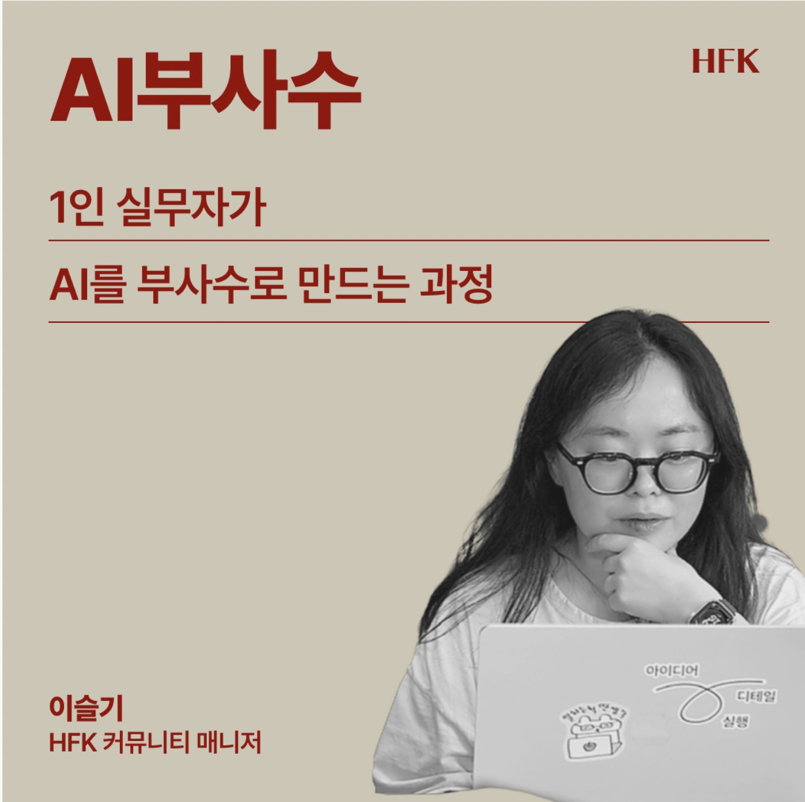
AI 세미나를 접하기 시작하며
스타트업
엔지니어 프라이빗 세미나
HBR
AX Summit
AI 세미나를 접하기 시작하며
정말... 환경이란... 무섭습니다... 😱
가족과 지인
주변 사람들의 회사 이야기
너희가 꽃이다
AX 팀빌딩, 현재 진행 중
저에게 영감과 배움을 되어 준 우연한 만남들입니다.
왜 쓰는가
같은 AI, 다른 이유
원장과 강사가 쓰는 이유
생산성을 높여서,
결국 더 많은 일을.
하고 싶은 일을.
직원에게 가르치는 이유
우리 조직 규모에 맞는
가장 알맞은 인원으로.
그리고 그 안에서 각자가 버겁지 않도록.
다시, 저의 이야기로
일 년 동안 이렇게 보냈습니다
매주 혹은 격주 일요일 3시간
자기 개발에 썼습니다
현장에 계속 옮겨 왔습니다
그러면서 시행착오를 겪었습니다
2학기 중간고사를 마무리하며
유의미한 전체 흐름과 자동화가 만들어졌습니다
같은 시기에 직원들의 AI 이해도 크게 올랐습니다.
이 강의를 시작해도 되겠다고 생각한 이유
지역과 규모를 떠나, 우리 모두
언젠가 비슷한 상황에 놓입니다
그때 저의 결정은 무엇이었는지, 그걸 나누려고 합니다.
실습 수업이 아닙니다
프로그램을 깔고, 연동하고,
스킬을 익히는 방법은 널렸습니다.
저는 이렇게 써 왔다는 이야기입니다.
01
첫번째 이야기
나는 어떤 도구를 선택했나?
쓰는 도구
세 AI 비교
보통 많이 쓰는 대표 3가지 AI
GPT
ChatGPT
 클로드
클로드
Claude
제미나이
Gemini
쓰는 도구 | 세 AI의 특징
각 AI, 이런 일에 씁니다
GPT
만능 대화 상대
아이디어 · 해석
그림 · 사진 생성
클로드
내 폴더에서 일하는 직원
클로드 코드 기준
교재 · 시험지 제작과 검수
구글 자료를 다루는 조수
구글 문서 · 드라이브
긴 PDF · 영상 정리
쓰는 도구
세 AI 비교
ChatGPT
무엇이든 물어보는 만능 대화 상대
쓰는 도구
세 AI 비교
GPT | ChatGPT
좋은 점
가장 쉬운 시작
그림·사진 생성
녹음 요약
Work 모드(7월 출시)
알아둘 점
결과는 화면 글
무료는 낮은 모델
자주 바뀌는 메뉴
아이디어
해석
카드뉴스 그림
쓰는 도구
세 AI 비교
Gemini
구글 문서와 긴 자료에 강한 조수
쓰는 도구
세 AI 비교
제미나이 | Gemini
좋은 점
구글과 한 몸
긴 자료를 한 번에
내 자료만 근거로
그림 생성·편집
알아둘 점
흩어진 기능
내 폴더와 거리
결과는 화면 글
구글 드라이브 작업
긴 PDF·영상 정리
쓰는 도구
세 AI 비교
클로드 코드
내 폴더에서 한 권을 만들어 내는 직원
제 주력 도구
좋은 점
파일로 끝난다
원문이 안 바뀐다
AI끼리 검수
규칙이 쌓인다
알아둘 점
세팅이 고비
쓸수록 비용
그림 생성은 없음
배우는 시간
시험지·교재 한 권
매주 같은 틀 반복
검수까지
제가 쓰는 프로그램
클로드 코드
VS Code 터미널에서 씁니다
챗지피티, 제미나이, 클로드 웹 버전까지 저마다 장단점이 있습니다.
강사이면서 콘텐츠 생산자인 저를 정의해 보니
제게 중요한 것은 작업의 정확성과 검수였고,
콘텐츠를 만드는 사람에게는 클로드 코드가 맞다고 판단했습니다.
 VS Code+터미널~/너희가꽃이다 % claude✻ Welcome to Claude Code!> 다정고1 내신 대비 변형문항 30개 만들어 줘● 시험범위 파일을 읽는 중…● 학교 기출 패턴 확인 → 문항 생성 → 검수
VS Code+터미널~/너희가꽃이다 % claude✻ Welcome to Claude Code!> 다정고1 내신 대비 변형문항 30개 만들어 줘● 시험범위 파일을 읽는 중…● 학교 기출 패턴 확인 → 문항 생성 → 검수
쓰는 도구
클로드 코드
질문, 해석, 아이디어는 GPT로 충분합니다.
한 권을 납품하는 일부터 도구가 갈립니다.
내 폴더에서 일하는
직원
쓰는 도구
세 AI 비교에서 남기는 말
비교표를 보고 나서, 이 세 가지만 기억해 주세요
첫 번째
셋 다 틀립니다
정확도는 모델보다 검수 구조가 정합니다.
쓰는 도구
세 AI 비교에서 남기는 말
두 번째
방식은 닮아 가는 중
ChatGPT Work와 Google Antigravity도
이제 내 폴더에서 일합니다.
브랜드보다 쓰는 방식을 보고 선택합니다.
쓰는 도구
세 AI 비교에서 남기는 말
세 번째
무료로 판단하지 마세요
무료 요금제는 유료와 모델이 다를 때가 많습니다.
제대로 비교하려면 같은 급끼리 써 봐야 합니다.
쓰는 도구
나의 AI 도구, 클로드 코드와
최고의 궁합은?
어떻게 하면 생산성이 폭발할 수 있을까?
쓰는 도구
클코와 함께 쓰면 좋은 도구 하나 더!
내 브라우저에서 일하는 AI 직원
크롬처럼 쓰는 AI 브라우저입니다. 클코가 내 폴더에서 일한다면,
Aside는 내가 로그인해 둔 사이트에서 일합니다.
01
연동 없이 그대로
메일 · 노션 · 구글 시트 · 카톡 웹까지, 사람처럼 사이트를 직접 씁니다
02
일을 기억합니다
방문 기록과 지난 작업을 기억해서, 매번 처음부터 설명하지 않아도 됩니다
03
중요한 건 내 확인 뒤에
비밀번호는 AI에게 보이지 않게 넣고,
결제 · 발송은 승인한 뒤에만 합니다
쓰는 도구
Aside 시연 1 · 10초
지금 이 장표를 말 한마디로 고쳐 볼게요
01
옆 창 열기
장표 옆에 Aside
대화창을 엽니다
02
한 줄로 시키기
「이 장 제목을
‘환영합니다’로 바꿔 줘」
03
바로 바뀝니다
보고 계신 이 화면의
제목이 그 자리에서 바뀝니다
쓰는 도구
Aside 시연 2 · 1분
로그인해 둔 네이버에서 일 시키기
01
네이버 열기
로그인돼 있는
스마트플레이스 리뷰 화면
02
한 줄로 시키기
「최근 리뷰 5개 읽고
답글 초안 써 줘」
03
확인하고 올리기
초안은 Aside가,
올리는 건 내가 확인한 뒤에
02
그럼 그 도구로, 어떤 일을?
어디서부터 쓸지 모르겠다면, 내 일부터 쪼갭니다
내 일을 해체하기
어디서부터 쓸지 모르겠다면, 내 일부터 쪼갭니다
AI는 이제 대충 말해도 알아듣습니다.
우리 학원 신입보다 맥락을 더 잘 잡습니다.
그래서 질문은
AI보다 먼저, 나에게
오프닝
나에게 던질 다섯 질문
나는 무엇이 힘든가
무엇을 맡기고 싶은가
내 일은 어떤 순서로 흘러가는가
이 일과 저 일은 어떻게 이어지는가
일의 처음과 끝 사이, 챙길 디테일은 무엇인가
내 일을 해체하기
나의 일은 누가,
어떤 방식으로 주나
저에게 가장 많은 정보를 어떤 채널로 받는지부터 찾아 보았어요.
내 일을 해체하기
카톡 한 줄이 곧 할 일입니다
다정고1 오00
선생님, 시험 범위 이번에 교과서 3과 아니고 4과부터 나간대요
대성고2 권00
이번 부교재 올포 3강부터래요
종촌고3 박00
저희 영어 시험 16일이에요
실장님
실장님
원장님 다정고2 신규생입니다. 학생 번호는 000, 학부모님 번호 000이고 첫 수업 11월 1일입니다
연락 = 오늘 나의 할 일
내 일을 해체하기
나는 할 일을 어디에서 가장 많이 받나
할 일을 받는 곳
일을 하고 나서
어디에 남기고, 누구에게 알리나요
내 일을 해체하기
저의 경우는요,
할 일을 받는 곳
1위 카톡
2위 노션 회의록
3위 이메일
일을 끝내면, 어디에 보관하고 전달할까?
보관
내 로컬 · 노션
전달
카톡
드라이브
카톡
슬랙
문자메시지
인스타
네이버 블로그
달력
노션
원생관리 프로그램
사진첩
메모
내 일을 해체하기 | 첫째, 쏟아 놓기
나의 모든 기록은 어디에 있고, 어디로 오는지 전부 나열합니다
내 일을 해체하기
셋째, 연결하기
카톡 · 노션 · 메모가 클로드 코드로 모이고, 결과물이 폴더에 놓입니다
① 어디서 보고카톡학부모 · 실장님 메시지노션회의록 · 할 일 목록메모적어 둔 할 일 · 아이디어② 클코 직원이 일하고STAFF · 사원증클코너희가 꽃이다 · AI 직원읽고›정리하고›만들고›검수③ 어디에 남기나내 폴더시험지 · 교재 · 상담 기록노션한 일 기록카톡학부모님께 전달
자동화
고르는 기준
이런 일부터 자동으로 돌립니다
중요도 ↑
빠지면 학원이 흔들리는 일
난이도 ↓
규칙으로 적을 수 있는 일
귀찮음 ↑
하기 싫어서 미루게 되는 일
반복 ↑
매일, 매주 되풀이되는 일
제가 자동화한 것 가운데
가장 대표적이고, 가장 편한 세 가지
제가 자동화한 것 가운데
1. 신규생 · 퇴원생 정보가 오면?
대표 자동화 1
카톡
신규생이 들어오면, 이젠 사람 손은 거의 안 갑니다
Daily
신규생 온/오프 보딩 처리
대표 자동화 1
신규생 온보딩
등록 이후, 이 순서로 자동화합니다
02
번호 저장
내 연락처에 저장
03
팀톡 생성
반톡 초대 + 개별 팀톡
04
환영 인사
학부모 · 신규생
05
케어 일정 조율
06
노션 업로드
올린 내용은 카톡으로 전송
대표 자동화 1
퇴원생 오프보딩
퇴원
카톡에서 퇴원 글을 읽으면
팀톡 지우기
반톡에서 내보내기
문자 + 3시간 뒤
관리톡 정리
대표 자동화 1
카톡
실장님의 글 한 줄이, 이렇게 나갑니다
대표 자동화 1
카톡
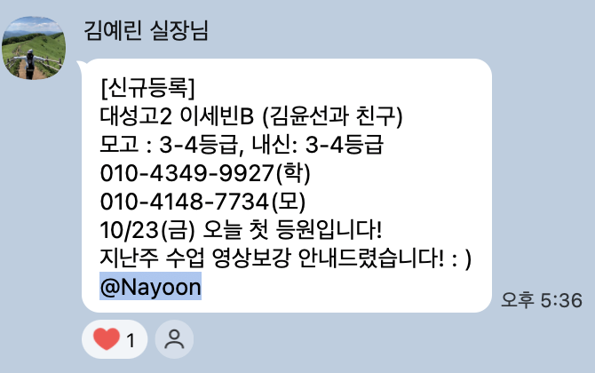
대표 자동화 1
카톡
AI가 대신 합니다
01
번호 저장
02
카톡 친구 추가
03
관리톡 개설
팀채팅
04
인사 · 케어 안내
05
반톡 초대
대표 자동화 1
카톡
어머님 안녕하세요! ○○ 학생의 학습 일정과 소통을 위한 💌 너꽃 개인 팀톡입니다.
⭐ 톡방 안내사항 ① 개인 일정 연락 ② 공부 질문 ③ 공지 확인
📢 케어 일정 안내
본수업과 별도로 매주 일요일에 케어 수업을 진행합니다. 케어는 오전 10시부터 저녁 10시까지 열려 있으니 …
👉 언제 오실지 오늘 안에 이 톡방으로 꼭 답장 부탁드립니다!
※ 이름과 번호는 가린 예시이고, 오른쪽 글은 실제 발송 문구의 앞부분입니다.
대표 자동화 1
카톡 (움직이는 화면)
메시지가 이렇게, 하나씩 올라갑니다
대표 자동화 1
카톡
떠나는 학생에게도, 같은 정성으로
송별 글
학생과 학부모님께 먼저 마음을 전합니다
안녕하세요, 어머님! 😊
○○의 퇴원 소식 전해 들었습니다. 아쉬운 결정이지만, 앞으로 ○○가 더 크게 성장해 나갈 모습을 진심으로 기대하고 응원하겠습니다.
○○야, 그동안 정말 수고 많았어! 공부하다가 막히는 부분이나 도움이 필요한 일이 생기면 언제든 편하게 연락 줘 ㅎㅎ
그동안 ○○를 믿고 맡겨 주셔서 진심으로 감사했습니다. 🙏
대표 자동화 1
카톡
제가 한 말
「신규생 관리톡 만드는 거, 자동으로 해 줘」
「팀톡이라고 하면 팀채팅이야」
「만들 때마다 창이 떠서 일을 못 해. 1시간에 한 번 몰아서 물어봐」
「○○이 팀톡 파해 줘」
대표 자동화 1
카톡
해가 바뀌면, 모든 학생의 방 이름이 한 번에 바뀝니다
[너꽃] 다정고1 ○○○ 관리톡
[너꽃] 다정고2 ○○○ 관리톡
1년에 한 번, 전체 학생의 학교와 학년 정보를 카톡에서 전체 변경합니다.
대표 자동화 2
수업 영상
수업이 끝나면, 영상이 일을 합니다
월 ~ 토 밤 10시 30분 시작
01
수업을 화면 녹화
패드에서 촬영
02
맥으로 자동 이동
촬영이 끝나는 대로
03
마이박스에 업로드
04
학교별 반톡에 올립니다
학부모 없이 학생과 매니저만
05
영상을 보고 정리
내가 중요하다고 한 것, 출제 포인트
빅북에 반영
강의 리뷰 테스트 제작
06
학생 명단에 맞춰 인쇄
수업 영상
내가 수업에서 한 말
“Is there a law that says I can’t go?” — 캐서린의 당돌함
수업 영상 → 리뷰 테스트
그 한마디가 문항이 됩니다
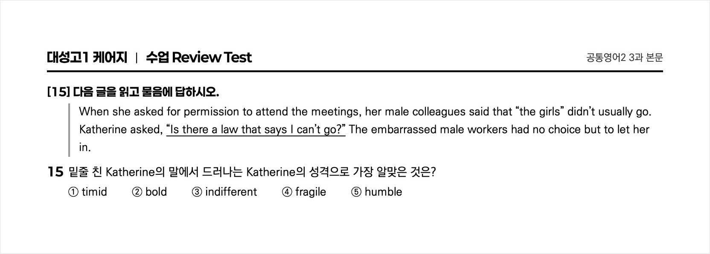
수업 영상 → 리뷰 테스트
정답은 수업에서 한 말, bold
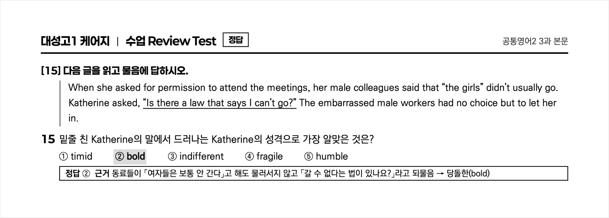
학생용 | 실제 출력본
수업 영상 → 리뷰 테스트
반 이름 · 이름 · 날짜 · 점수 칸이 맨 위에 있습니다
어법 · 어휘 · 지칭 · 빈칸 문항이 한 장에 이어집니다
수업 범위(올림포스 11강 1~8번)가 머리에 찍힙니다
정답판 | 근거 포함
정답 선택지에 회색 표시가 들어갑니다
문항마다 「정답 + 근거」 상자가 바로 아래 붙습니다
채점하는 사람이 해설을 찾아볼 일이 없습니다


대표 자동화 2
수업 영상
07
사람은 인쇄기 앞에서 가져오기만
그 전의 모든 일은 자동
대표 자동화 2
수업 영상
제가 건넨 명령은 이 한 장입니다
클로드 코드에 전달한 명령
「수업 시간 녹화본으로 할 수 있는 자동화를 다시 정리하자. 월~토 저녁 10시 30분에 작업을 시작해.」
대표 자동화 2
수업 영상
클로드 코드에 전달한 명령
1 화면 녹화본이 사진첩에 들어오면 자동으로 마이박스에 올려
2 올라간 파일을 학교별 반톡에 올려
3 영상에서 내가 중요하다고 한 것을 정리해 빅북에 반영하고, 강의 리뷰 테스트를 만들어
대표 자동화 2
수업 영상
클로드 코드에 전달한 명령
4 리뷰 테스트는 제작되는 대로 학생 명단에 맞춰 인쇄해
「누군가 인쇄기 앞에 가서 인쇄물만 가져올 수 있게, 그 전의 모든 작업을 자동화해 줘.」
대표 자동화 2
수업 영상
수업 영상을 공유와 보강 차원에서
「반 단톡방에 링크 공유해!」라고 시키면,
클코가 카톡에서 해당 반을 검색해서
링크를 자동으로 올립니다.
대표 자동화 2
수업 영상
선생님이 한 말이, 출제 포인트 카드가 됩니다
YBM(김) 공통영어2 3과 | 대성고1 토요일 수업 영상 2개(28분 · 23분)
영상 2개 안에 강사가 설명한 문제로 출제할 수 있는 시험 포인트 37개 확인!
대표 자동화 2
수업 영상
4
주어진 문장 · 연결사 단서
10
되는 단어 · 안 되는 단어
13
어법
대표 자동화 2
수업 영상
10
지칭 · 의미 · 내용 일치
segregated 자리에 united · integrated 는 안 된다
영상 A 9:34~9:52 | 어휘 오답 선지로 반영
대표 자동화 2
수업 영상
not until = after. 「이번 시험에 100% 나온다」
영상 A 23:02~23:24 | 어법 · 서술형 우선 배정
determined 가 정답, vulnerable · fragile 은 오답
영상 A 20:15~21:12 | 어휘 추론
상태: 초안. 받아쓰기 오인식을 원문과 대조한 뒤, 승인한 카드만 출제에 넣습니다.
대표 자동화 2
수업 영상
출제 포인트 카드 실물
수업 해설 카드 | 영상 시각과 출제 반영처가 붙습니다
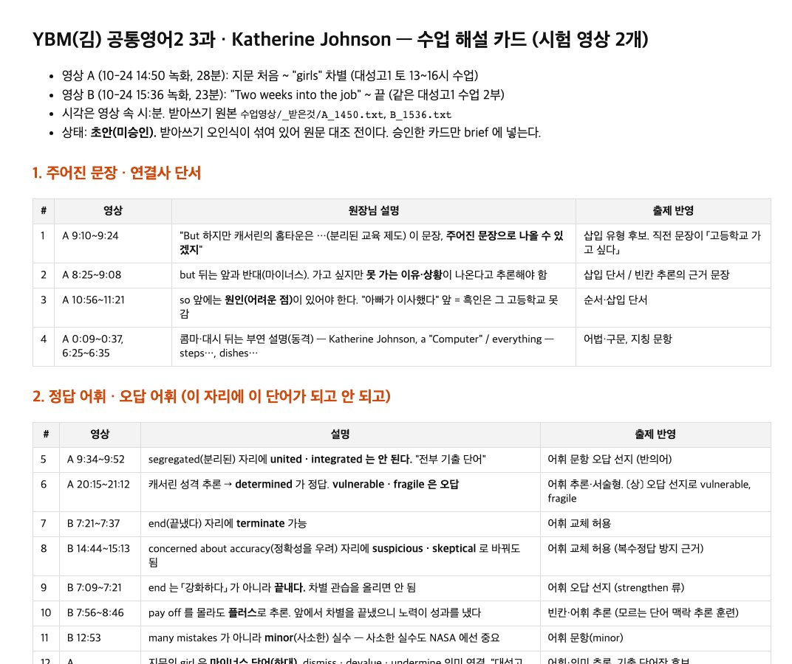
03
내가 자는 동안
새벽에도 적어도 세 명이 일합니다
내가 자는 동안
원장의 새벽
밤새도록 교재 만드는, 잠들지 않는 클코 직원!
제가 자동화한 것 가운데
세 번째
3
나의 새벽
시험 범위가 뜨면 그 범위의 문항을 새벽에 만들어 둡니다
대표 자동화 3
나의 새벽
밤 11시, 교재 작업이 시작됩니다
23:00 시작 전
오늘 업데이트된 학교의 시험범위를 카톡으로 확인
ex. 새롬고1 김00 : 「선생님 이번에 10월 모의고사 전체 들어간대요.」
23:00 ~ 05:00
매일 카톡으로 오는 시험범위를 정리하고 있다가, 해당 시험범위를 해당 학교의 시험 패턴에 맞춰 변형문항 풀가동 생산!
대표 자동화 3
나의 새벽
밤 세션은 매번, 학교 지침서를 읽고 문항을 씁니다
9개교 지침서에 들어 있는 것
중간고사 실물 시험지를 쪽마다 읽은 정리
번호별 유형과 배점, 발문 원문
선지 언어와 길이, 오답을 만든 방식
지문을 고쳐 쓴 방식
1:1 상담에서 들은 이야기(학생 이름 없이)
학교 기준을 바꾸고 싶으면, 지침서만 고치면 됩니다
내가 자는 동안
자동화에서 제일 중요한 설정,
컴퓨터의 기상 시간
컴퓨터가 잠들면 에이전트도 잠듭니다.
덮개를 닫아도, 화면이 꺼져도 깨어 있게 해 둡니다.
우리 학원 자동화 시간표
매일 10:00
시험범위 확인
매일 23:00
밤 교재 작업, 카톡 정리
월, 수, 금
작업 현황을 경영 단톡에 공유
매달
학교 학사일정 업데이트
04
한 시즌을 AI로
개강부터 시험 뒤 상담까지
한 시즌을 AI로
한 시즌 지도
01
내신 개강
02
매주 케어지
03
시험범위 확정
04
빅북 배정표
05
빅북 하루 완성
06
FINAL 직보 동형
07
학생별 개인 교재
08
시험 뒤 이의제기
09
시험지 분석 리포트
10
기말 개강
한 시즌을 AI로
늘 도는 것
당일 수업 내용과 과제 카톡 안내 | 신규생, 퇴원생 단톡 정리 | 시험범위 감시 에이전트
한 시즌을 AI로
시즌 동안 실제로 나오는 교재들
빅북 | 동형 모의고사

주간내신 | 어휘

주간내신 | 구문
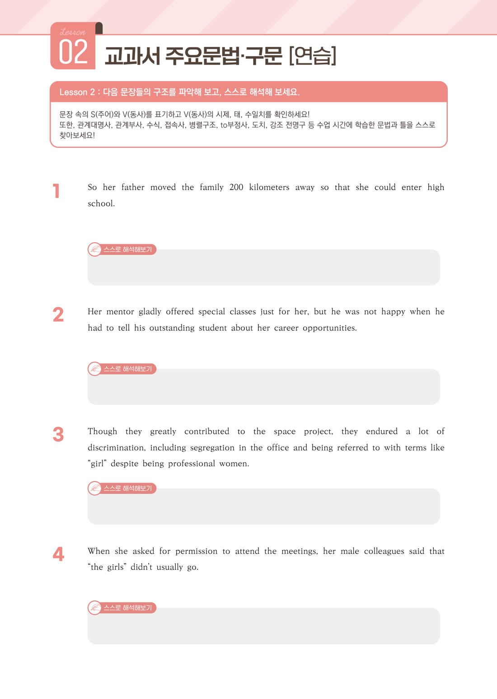
주간모평 | 오른쪽 쪽

분석 리포트
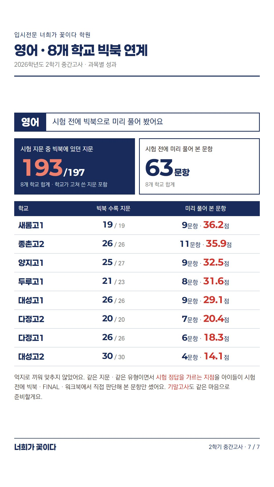
한 시즌을 AI로
이런 교재와 자료도 나옵니다
케어지 정답
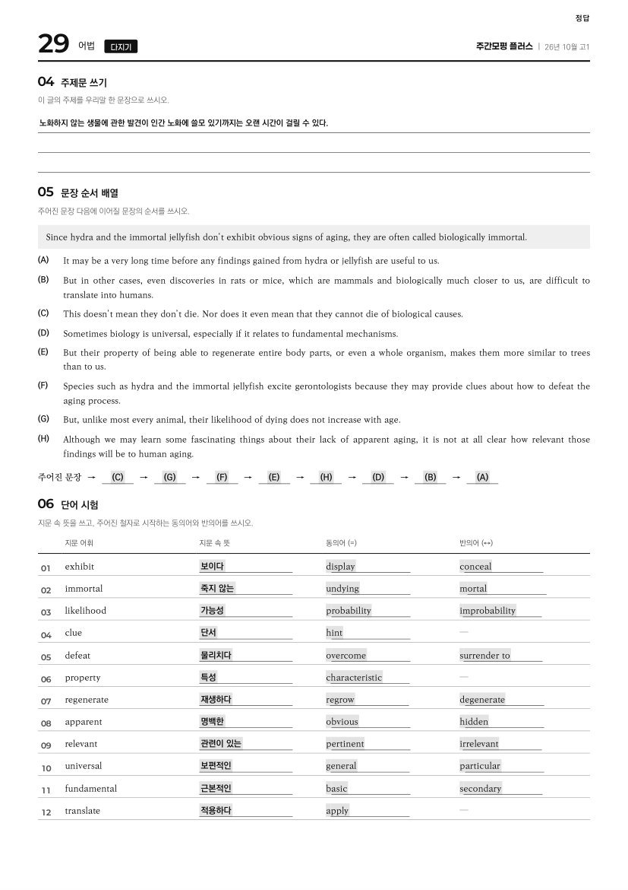
한줄해석
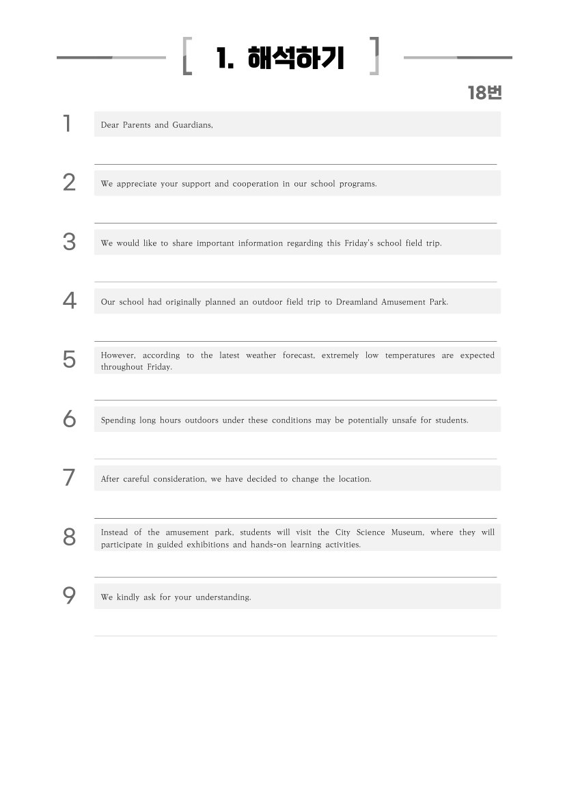
목표문법 페이지

중등 주간내신

문법 워크북

한 시즌을 AI로
AI에게 뭐 시키냐구요? 이런 거 다 하세요!
수업 당일 카톡
오늘 수업 내용
과제 안내
매 수업 요약과 피드백
늘 켜 두는 것
신규생 관리 단톡 개설
퇴원생 정리
시험범위 감시
한 시즌을 AI로
시험이 끝난 날, 바로 할 수 있는 것은?
시험 직후
서술형 학교 반톡에 「이의제기할 문항 보내세요」 글을 예약해 둡니다
질문이 오면
AI로 이의제기 문장을 만들어 학생에게 바로 건넵니다
결과
부분 점수 2~3점을 되찾은 사례
한 시즌
상담 피드백
알고 있는 것을, 제때 전합니다
시험 뒤
학생마다 1:1 상담
그날 밤
상담 메모를 학생별로 정리
관리톡
학부모님께 피드백 글
서비스의 평판은 여기서 쌓이기 시작합니다
한 시즌
상담 피드백
실제 상담 메모
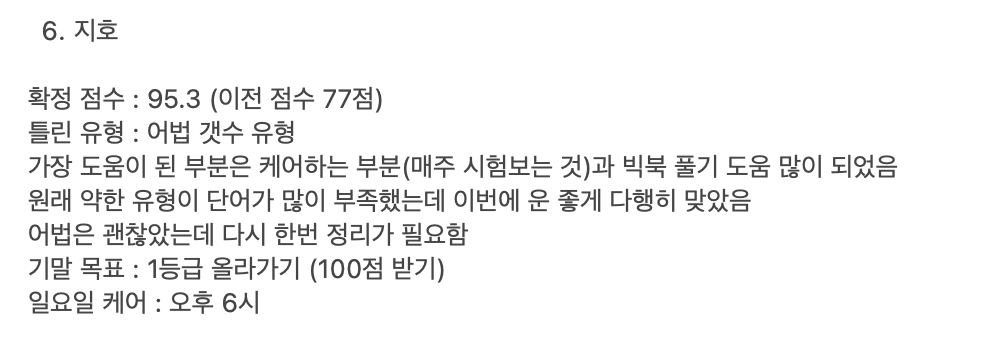
메모를 보고 학부모님께 보낸 메시지
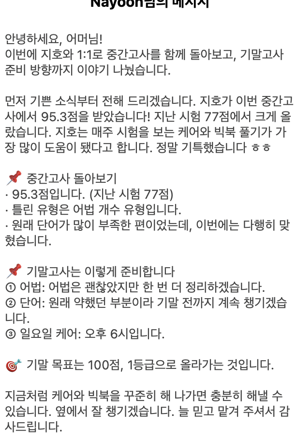
쉬는 시간 10분
다음은, 이걸 정말 믿을 수 있는가
내가 자는 동안
브라우저에서 하는 일은 어사이드
만드는 일은 클로드 코드
사이트에 들어가 클릭하고 입력하는 일은 어사이드
AI 에이전트가 들어 있는 브라우저입니다. 내일 바로 쓰실 수 있는 첫 도구로 권합니다.
맡기기 전 한 가지 규칙
결제, 발송, 삭제 직전에는 사람이 확인합니다.
행정실은 어떻게 하나
너꽃 행정실이 AI에 맡긴 일 세 가지
첫 번째
1
신규생 온보딩
이름, 학교, 번호, 첫 등원 예정일만 주면 등록부터 강사 전달까지
두 번째
2
수강료와 교재비
다과목 시수를 확인하고 안내 문자까지 한 번에
행정실은 어떻게 하나
세 번째
3
다과목 학생 취합
혜택 대상 학생이 빠지지 않았는지 한 번에 확인
일이 많고, 반복되고, 실수는 없어야 하는 일입니다
행정실은 어떻게 하나 1
신규생 온보딩: 등록부터 강사 연결까지
1 사람
네 가지만 전달
이름, 학교, 번호, 첫 등원 예정일
2 클로드 코드
정보를 정리
등록에 필요한 형태로 맞춥니다
3 어사이드
통통통에 등록
통통통은 웹 브라우저라서 어사이드가 대신 입력합니다
4 담당 강사
카톡으로 연결
학생을 담당 강사에게 전달하고 카톡으로 소통을 시작합니다
등록해 놓고, 전달하고, 연결하는 데까지 이어집니다
행정실은 어떻게 하나 2
수강료와 교재비를 매달 한 번에
우리는 다과목이라 계산이 정말 복잡합니다. 중복이나 실수가 나면 안 됩니다.
사람이 하는 일
시간표 상세페이지를 노션에 업데이트
매달 한 번, 입력은 사람이 합니다
행정실은 어떻게 하나 2
AI가 하는 일
1
통통통에 학생별 수강생 생성
2
시수 확인
3
안내 문자를 한 번에 발송
이걸 돌려 놓고 실장님은 점심을 드시러 갑니다
행정실은 어떻게 하나 3
다과목 학생 취합
다과목 학생에게는 따로 혜택이 나갑니다
이전
엑셀을 내려받아 눈으로 확인
학생마다 빠진 곳이 없는지 사람이 하나씩 봅니다
지금
한 번에 확인
누락된 학생이 있는지 AI가 대조해서 알려 줍니다
행정실은 어떻게 하나
어렵지 않지만 중요도는 가장 높은 일
많다
학생 한 명마다, 과목마다 챙길 게 있습니다
반복된다
매달, 매 학기 같은 일이 돌아옵니다
실수는 없다
수강료가 중복되면 학원의 신뢰가 흔들립니다
실장님 말씀
행정실은 어떻게 하나
행정실 업무가 혁신적으로 바뀌었다
3명
1명
너희가 꽃이다와 우주로,
두 학원의 행정실을 하나로
세종시에서 AI 리터러시가 가장 높은 조직
저는 너희가 꽃이다가 그렇다고
생각합니다
05
나다운 AI
누가 봐도 우리 학원 글, 우리 학원 교재
나다운 AI
나만의 AI 만드는 방법
첫 번째
1) 내 말투를 등록한다면?
두 번째
2) 디자인 레퍼런스를 준다면?
세 번째
3) 내 취향을 계속 전달한다면?
나다운 AI
카톡 속 내 말을 읽혀서 말투를 뽑았습니다
내가 한 요청
강사님들과 소통하는 내 말투를 카톡으로 확인해서 말투 스킬에 저장해줘. 강사님, 파트너즈 원장님, 직원, 학부모님, 학생들 각각의 내 말투를 학습해.
읽은 곳
강사님 개인톡, 파트너즈 원장님 대화, 직원 단톡과 행정실, 학부모 관리톡 방 280개
읽은 글
내가 보낸 글 중 길이가 있는 것만 학부모님께 268건, 학생에게 221건
나다운 AI
결과
다섯 칸으로 나눈 말투 스킬 한 개. 카톡을 보내기 직전에 자동으로 불러옵니다.
말투는 받는 사람마다 다섯 칸입니다
강사님께
「다빈 선생님~」으로 부르고 고마움을 용건보다 앞에 둡니다. 요청은 「~해 주시면 좋을 것 같습니다 :)」
파트너 원장님께
「원장님! 안녕하세요 :))」로 열고 의견은 「어떠세요?」로 묻습니다. 피드백 자리를 열어 둡니다.
나다운 AI
직원에게
이름에 님을 붙이고 짧고 분명하게 씁니다. 존대를 올리지 않고 「확인 부탁드립니다」는 붙이지 않습니다.
학부모님께
「어머님~」으로 열고 학생은 「이름+이」로 부릅니다. 어려운 이야기는 전화 시간을 정해 옮깁니다.
학생에게
반말로 다정하게 씁니다. 「~하자 :))」, 「수고했어!」. 약속은 분명하고 야단치지 않습니다.
나다운 AI
같은 사람이 보낸 글, 받는 사람이 달라지면 이렇습니다
강사님께
「선생님, 제가 금요일에 이야기 나눈 내용이 제대로 반영되었는지 한번 더 확인해 주시면 좋을 것 같습니다 :)」
파트너 원장님께
「원장님! 안녕하세요 :)) 오늘 비가 부슬부슬 내리네요. 샘플 가안 시간 되실 때 봐주시겠어요?」
직원에게
「○○님~ 저 양지고1 이번 시험지 한 부만 인쇄 부탁합니다!」
나다운 AI
학부모님께
「○○ 어머님~ 너무 반가운 소식입니다! 이번주부터 함께 열심히 해보겠습니다!」
학생에게
「○○야~ 괜찮아! 모의고사가 많이 어려워졌어. 우리 내신 대비 꼼꼼하게 하면서 천천히 올려보자 :))」
나다운 AI
한 줄 지시가 바로 규칙이 됩니다
내가 한 지시
앞으로 강사님에게 보내는 건 성 빼고 00 선생님~ 이렇게 시작해서 보내. 성까지 넣으면 너무 딱딱해 보이니까.
지시 전
이다빈 선생님, 자료 보내요.
지시 후
다빈 선생님, 자료 보내요.
이 규칙은 말투 스킬과 카톡 발송 절차에 함께 적어 둡니다. 다음 카톡부터는 말하지 않아도 지킵니다.
나다운 AI
글을 맡길 때 늘 붙이는 네 마디
첫 번째
「비문 검수해 줘」
두 번째
「번역투 없애 줘」
세 번째
「쉽고 구체적으로 말해 줘」
네 번째
「발표 자료는 문어체로 써 줘」
06
믿을 수 있는가
신청서에서 가장 많이 물어보신 것, 검수
믿을 수 있는가
검수
누가 검수를 잘할까?
「출판사」는 어떻게 할까?
믿을 수 있는가
검수
클로드 코드에게 한 질문
“콘텐츠를 실수 없이, 오류 없이 만드는 곳이 배열, 정렬, 오탈자까지 정말 오류 없이 작업하는 곳이 출판사잖아.
출판사의 검수팀도 편집팀도 이제는 AI를 무조건 활용할 텐데, 그들은 AI 검수의 레이어를 어떻게 쌓고, 어떤 역량을 기르고, 어떤 것을 보라고 요구해?”
검수를 잘하는 방법보다 먼저, 검수를 잘하는 곳이 어디인지부터 물었습니다.
믿을 수 있는가
검수
출판사의 검수 층에 AI를 얹는 방법
규칙 검사기
하는 일
스타일시트를 코드로 바꿉니다(표기 통일, 번호 연속, 정답 분포)
사람이 맡는 부분
규칙을 만들고 늘립니다
믿을 수 있는가
검수
AI 1차 교정
하는 일
오탈자, 비문, 용어 불일치를 제안합니다
사람이 맡는 부분
제안마다 받을지 버릴지 판정합니다
원고와 조판본 비교
원고와 PDF에서 뽑은 글자를 맞대어 빠진 글, 바뀐 글을 찾습니다
차이가 난 곳만 봅니다
믿을 수 있는가
검수
AI 블라인드 풀이
하는 일
정답을 숨기고 풀게 해 복수 정답과 정답 오류를 걸러 냅니다
사람이 맡는 부분
답이 갈린 문항을 심판합니다
사람 판단
교육과정 부합, 학년 수준, 편향, 저작권, 난이도
최종 책임을 집니다
믿을 수 있는가
검수
첫 번째
AI가 원문을 매끄럽게 다듬지 못하게 한다
두 번째
AI가 고친 것을 그대로 반영하지 않는다. 제안으로 받고, 사람이 승인한다
믿을 수 있는가
검수
제 체계를 비교해 보고, 두 가지를 더 만들었습니다
이미 있던 것, 보통 출판사보다 앞선 부분
믿을 수 있는가
검수
이미 있던 것, 보통 출판사보다 앞선 부분
다른 모델 둘로 블라인드 풀이
0개 검사를 실패로 처리
결함 장부와 승격
비교하고 새로 만든 것
믿을 수 있는가
검수
비교하고 새로 만든 것
240
규칙을 한 권으로 모은 「표기 · 조판 원칙」
14/15
일부러 오류를 심은 교재로 검수기를 시험했더니, 15건 중 14건을 잡았습니다
놓친 한 건의 원인을 찾아 구멍을 막았습니다
만든 AI에게 「이거 맞아?」라고 물으면
“네, 맞습니다.”
기계가 만든 문제를 같은 기계가 다시 읽는 것으로는
검수가 되지 않습니다.
믿을 수 있는가
다른 AI가, 답을 모른 채, 다시 풉니다
첫 번째
1
만든 AI는 자기 문항을 검수하지 않습니다
두 번째
2
서로 다른 AI 둘이 정답을 모른 채 다시 풉니다
세 번째
3
답이 갈리면 또 다른 AI가 이의를 심사합니다
네 번째
4
셀 수 있는 것은 AI 대신 코드가 셉니다
믿을 수 있는가
9겹
학생 앞에 나가기 전, 지금 쌓여 있는 검수
원문 잠금
근거 인용
기계 검사
블라인드 재풀이
이의 심사
교차 검수
납품 PDF 되읽기
출고 판정
결함 승격
나만의 AI 만드는 방법
1) 내 말투를 등록한다면?
2) 디자인 레퍼런스를 준다면?
3) 내 취향을 계속 전달한다면?
디자이너가 만든 작업물을 레퍼런스로 주고 규칙으로 뽑게 합니다
나다운 AI
디자이너 작업물을 주면 규칙으로 뽑습니다
1
디자이너가 만든 안내문을 카톡으로 받아 폴더에 모읍니다
2
AI가 눈으로 보고 순서, 색, 글꼴 크기, 문구 말투를 뽑습니다
3
뽑은 규칙을 디자인 레퍼런스 장부에 한 줄씩 이어 붙입니다
4
안내문이나 포스터를 만들기 전에 AI가 먼저 장부를 꺼내 봅니다
레퍼런스를 제가 들고 있을 필요가 없습니다.
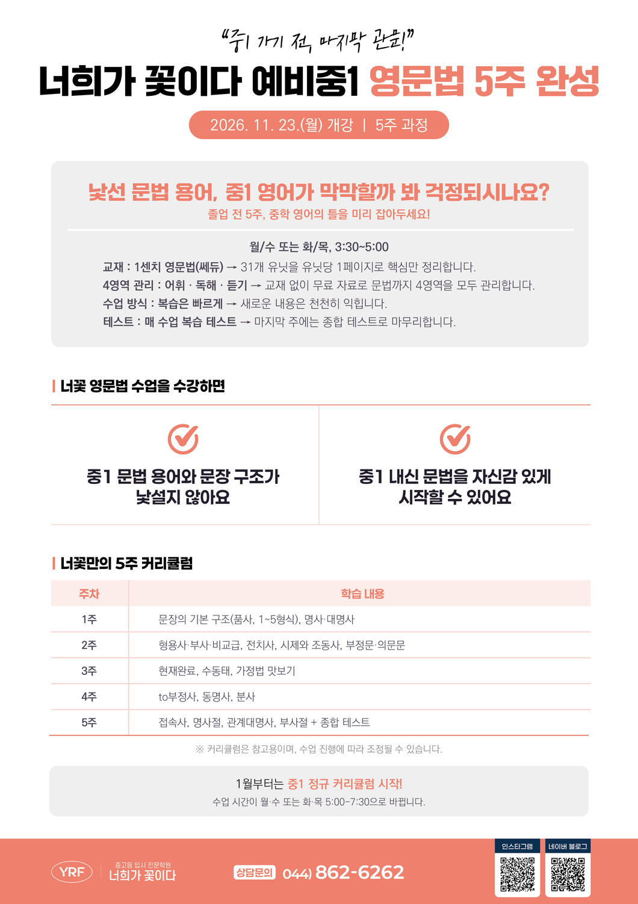
나다운 AI
레퍼런스에서 뽑은 어휘로 새 주제를 만듭니다
디자이너 원본
새 주제로 만든 결과

그대로 가져온 어휘
굵은 제목에 키워드만 색
회색 둥근 상자와 「라벨 : 내용」 줄
세로 막대 소제목과 색 머리 표
아래 꽉 찬 색 띠
나다운 AI
결과물이 한 얼굴이 되려면, 디자인부터 정해 둡니다
브랜드 색
네이비, 코랄, 연회색을 정해 두고 모든 결과물에 같은 색만 씁니다.
글꼴
제목은 Paperlogy, 본문은 KoPubWorldDotum으로 고정합니다.
밑줄 굵기
0.4pt로 통일합니다. 블로그, 교재, 안내문 모두 같은 굵기입니다.
나다운 AI
디자인도 말로 고쳐 만든 결과물
우주로수학 리뷰 부탁 카드
AI 강연 카드뉴스

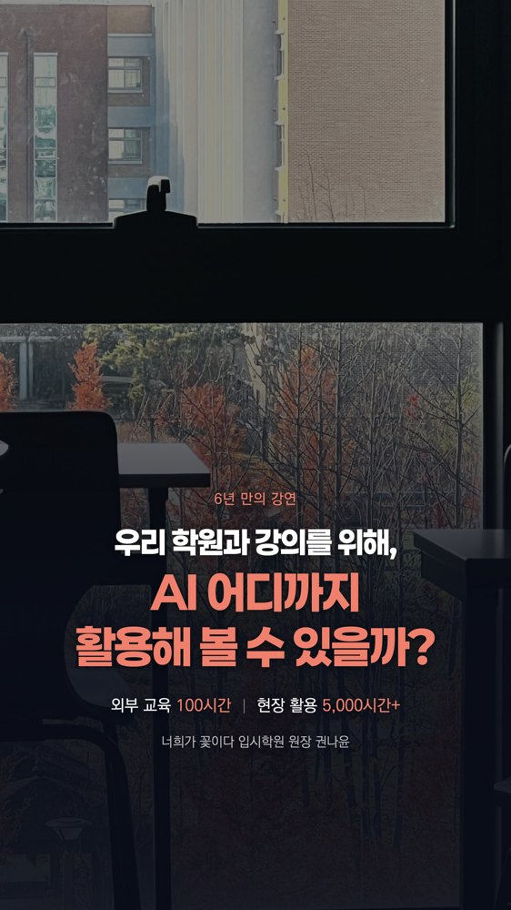
나만의 AI 만드는 방법
1) 내 말투를 등록한다면?
2) 디자인 레퍼런스를 준다면?
3) 내 취향을 계속 전달한다면?
결과를 보고 그때그때 한 말을 규칙으로 쌓아 갑니다
나다운 AI
디자인은
이렇게 말해서 (잡도리해서) 고칩니다
어근 특강 안내문 한 장이 열 번 고쳐지는 동안
제가 한 말과 결과물이 바뀐 순서를 그대로 보여 드립니다.
1단계 | 첫 요청
내 요청
어근 교재를 쓸 강사님들에게 전달할 수 있게 PNG로 만들어줘. 교재 구성, 매주 단어, 몇 주 기획인지, 수업 전 테스트, 마지막 주에 하는 일. 행정실장님들도 보면 구성을 알 수 있게 한 페이지 설명서도 만들어줘.
첫 결과물
강사용 안내와 행정실 설명서. 내용은 다 들어 있지만 글자와 상자가 가득 찼습니다.

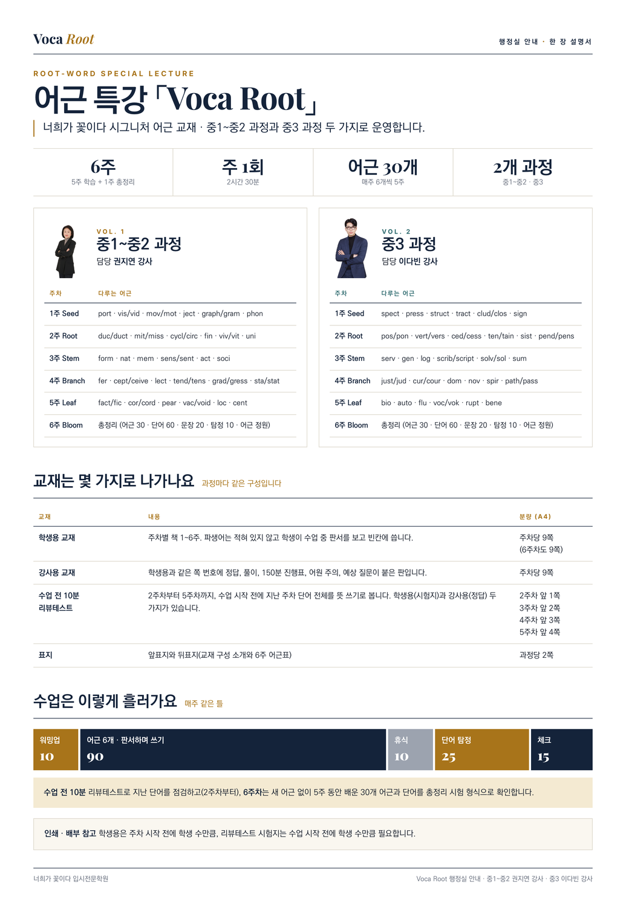
2단계 | 사진, 쓰임, 크기
사진
다빈 강사 머리 위가 잘려서 가운데에 전체 사진이 나오게 정렬해. 프로필 사진 뒤 배경은 없애줘.
쓰임
선생님들이 각 반 첫 수업 OT 자료로 쓸 페이지, 행정실에서 알아야 할 페이지로 다시 세팅해줘. 표지 얘기를 뭐하러 해.
크기
사이즈 모두 A4로 인쇄할 수 있게 작업해줘.
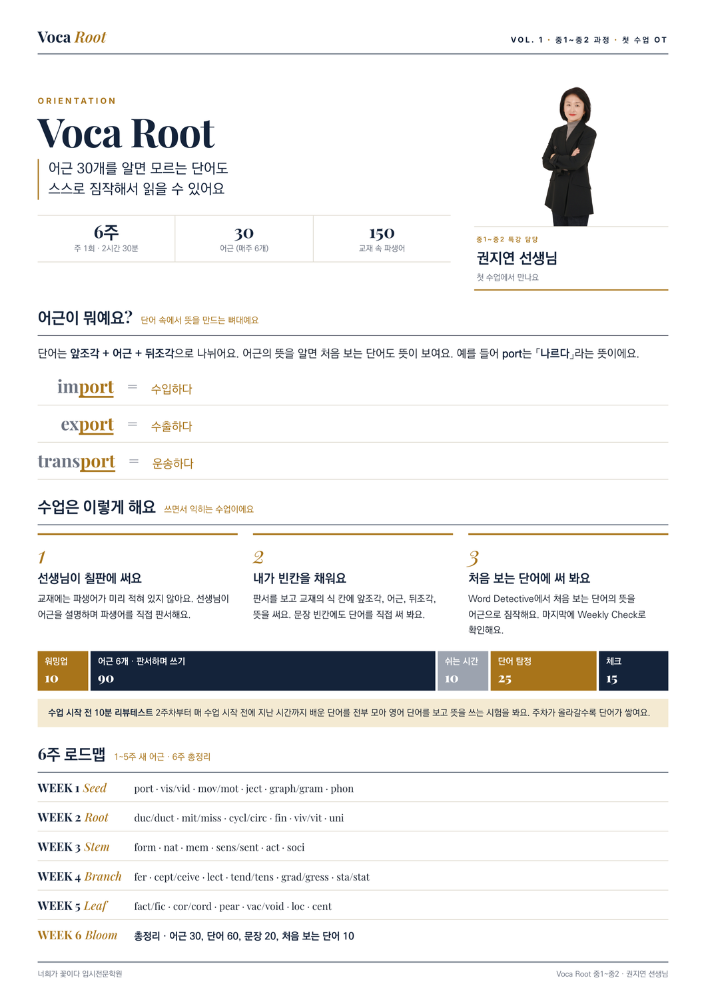
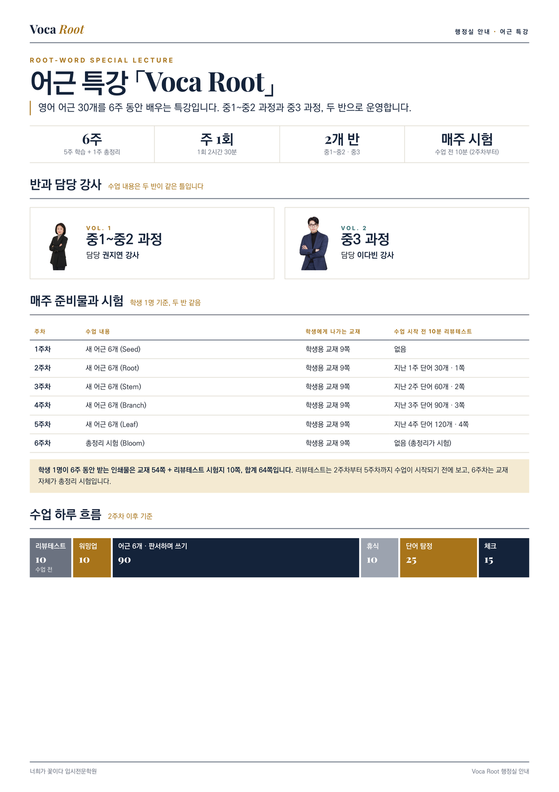
3단계 | AI 티가 난다
내 요청
이런 상단 폰트는 너무 AI 티가 나는데, 인간 디자이너라면 어떻게 바꿀까? 절대 AI 티가 안 나는 디자인을 하려면 내가 어떻게 요구하고, 어떤 스킬을 알려줘야 해?
그래서 스킬에 적은 「AI 티 금지 목록」
- 자간 벌린 작은 영문 대문자 라벨 금지
- 가운뎃점(·)으로 정보 잇기 금지
- 통계 숫자 줄(6주 / 30 / 150) 금지
- 같은 폭 카드 3장 나란히 금지
- 전폭 머리 선 대신 색 꽉 찬 띠
기준은 학원 디자이너가 만든 안내문입니다.

4단계
기준을 적용한 결과: 머리 부분
전 | 영문 라벨, 가운뎃점, 통계 줄, 머리 선
후 | 굵은 한글 제목, 알약, 교재 목업


5단계
빽빽함, 그리고 두 강사님 얼굴 크기
빽빽함
여기 너무 빽빽하게 보여. (회색 상자 안 줄 간격과 안쪽 여백을 넓힘)
두 강사님
둘 나란히 둘 때 사이즈가 달라. 얼굴 사이즈를 동일하게 하려면 권지연 강사 하단이 잘려도 괜찮잖아. 구도와 얼굴 사이즈를 한 틀에 동일하게 담아야 해.
다시
여전히 느낌이 달라. 권지연 강사님을 좀 더 키워야 할 것 같은데.
처음

한 번 고친 뒤

마지막

6단계 | 쓰임 자체를 다시 정의
내 요청
이게 왜 행정실에 필요한 말이야! 행정실은 시험지 인쇄를 하는 곳이 아닌데. 페이지 수도 몰라도 돼. 학부모님이 연락 왔을 때 수업 설명을 충분히 해 줄 수 있어야 해. 수업이 어떻게 기획됐고, 각 반이 어떤 단어를 다루고, 단어를 어떻게 골랐고, 들으면 어떤 점이 좋고, 수업은 언제인지.
행정실 안내에서 지운 문구
수업 시간, 기획 의도, 단어 선정 방법, 반별 어근, 좋은 점으로 다시 짰습니다.


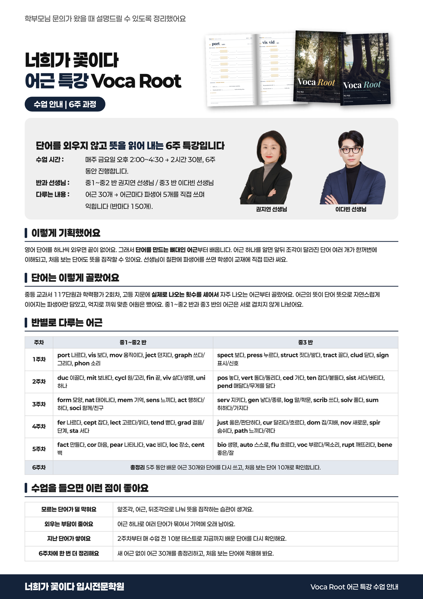
7단계 | 교재 목업, 큰 사진
교재 목업
우리가 만든 Voca Root 교재 디자인을 목업으로 작업해서, 실제 교재 이미지처럼 안내문에도 강사 OT 자료에도 넣어줘.
사진
권지연 강사 사진 너무 작아. 이다빈 강사도 OT 자료에 사진이 작아.
사진이 작다고 짚은 화면
마지막 OT 자료

처음과 마지막
같은 내용, 열 번의 말로 바뀐 결과
처음 | 강사 안내
처음 | 행정실 설명서
마지막 | 첫 수업 OT
마지막 | 학부모 문의용 안내
나다운 AI
10번 말하고 10번 잡도리하는 거,
힘들죠?
그런데 우리, 조교나 신입 직원이 들어와도
이 정도는 계속 이야기하잖아요.
똑같습니다. 근데 차이점은 뭘까요?
여러분, 이쯤 되면
조금 힘드시죠?
저희 유튜브 하나 짧게 볼게요? ㅎㅎ
라디오 출연 이효석 대표
“생각보다 할 수 있는 일이
많다는 것을 알기 때문에,
더 많은 일을 하게 된다”
우리는 일을 미루기보다 늘 끌어오는 사람들입니다.
저도 끌어오다 보니 1년 치 일이 한 달 안에 끝나 있었습니다.
왜 쓰는가
학생은 많은데,
한 명 한 명 다 챙기는 학원
사업으로 보면 가장 이상적인 그림입니다. 이제는 가능합니다.
학생이 느끼는 퀄리티 = 나를 얼마나 잘 알고 챙겨 주는가
앞으로 우리 학원은
자료는 누구나 갖게 됩니다
교재와 문항의 원가는 0에 가까워집니다.
빅북 15회, 주간내신, 취약유형 교재.
지금은 밤에 자동으로 뽑고 있지만
1~2년 안에 다른 학원도 비슷하게 합니다.
「자료 좋은 학원」은
차별점이 못 됩니다
그래서 남는 것
01
이 아이를 누가 얼마나 잘 아는가
학생의 상태와 기록을 놓치지 않고 아는 일
02
그걸 아이가 직접 느끼는가
알려졌다고 느끼는 순간 학원의 퀄리티가 됩니다
01 정성의 기준
AI가 했다는 걸 알면
가치가 떨어지는 일인가?
그렇다면 사람이 직접 하고,
AI는 준비만 합니다.
예를 들어
AI가 하는 것
상담 메모와 오답 기록을 정리해 「오늘 꼭 할 말 한 줄」 뽑기
선생님이 하는 것
그 말을 아이에게 직접 하기
02 학원의 진짜 자리
아이를 실제로
앉혀서 하게 만드는 일
동기를 주고, 약속을 받고,
다음 주에 확인합니다.
사람이 지켜보고 있다는 압력과 관계
03 숫자로 확인
선생님 한 분이 주에
학생 한 명당 몇 분을
얼굴 보고 쓰는가
이 숫자가 늘지 않으면
전략이 작동하지 않는 겁니다.
한 줄 정리
AI
이 아이를 아는 일
사람
알려졌다고 느끼게 하는 일, 실제로 하게 만드는 일
취약유형 개인 교재
학생에게 주는 것
커스텀
사교육이 가는 방향
커스텀
교재 라인도 학생마다 맞는 자료를 골라 주는 쪽으로 정리했습니다.
한 시즌을 AI로
150명
150권
학생 한 명마다, 그 학생이 약한 유형만 모은 교재 한 권
그래서, 저의 답은
AI가 비워 준 시간을
학생과 학부모에게
얼마나 쓰느냐입니다
AI 시대 학원의 경쟁력은 거기서 갈립니다.
쓰는 도구
지금은 과도기입니다.
다 해 보고,
다 알아야 합니다
지금 필요한 태도는 그것 하나입니다.
미국의 한 IT 회사 이야기. 2주 만에 사람들이
자기 신용카드 번호를 다 내주었습니다.
사람은 불안보다
편리함을 고릅니다
주니어에서 과장으로
내 AI를 키우는 법, 그리고 오늘 밤 해 볼 한 가지
CLOSING
파일을 더 많이 넣어 준다고 AI가 똑똑해지지는 않습니다.
사람의 관점에서
함께 고민할 때 자랍니다
CLOSING
사람과 대화하는 시간만큼,
AI와 대화합니다.
묻고, 따지고, 잔소리하고, 토론합니다.
그리고 실패를 기록합니다.
진짜 마지막 이야기!
!
제가 AI에 대해
느낀 것은 느낌표입니다
학원에는 정말 미친 듯이 잡일이 많습니다.
이걸 AI로 덜어낼 수 있다는 것이 엄청난 느낌표였습니다.
그런데
?
지금 AI는 굉장히 시끄럽습니다
속도 조절론도, 비관론자도 있습니다.
그런 이야기만 골라 들으면 물음표가 생깁니다.
“이거 지금 꼭 배워야 해요?
나중에 더 싸지면, 말만 하면 뚝딱 되는 시대가 오지 않나요?”
맞습니다
분명히, 그렇게 올 겁니다
지금 여기 앉아 돈을 내고 배운 이 시간을,
6개월 뒤에는 “이걸 돈 주고 배웠어?” 하고 떠올릴지도 모릅니다.
그래서 저는
비관주의자가 아닙니다.
낙관주의자입니다.
그러나 팔짱 끼고 “잘되겠지” 하는 낙관주의자는 아닙니다.
가능주의자
근거 없이 비관하지 않고, 근거 없이 희망하지도 않습니다
낙관주의 Optimism
“잘될 거야”
팔짱을 끼고 막연하게 기다립니다
가능주의 Possibilism
“잘되게 만들 수 있어”
내가 오늘 할 수 있는 것을 해 봅니다
여기서 근거는, “나는 무엇을 노력했는가”입니다.
가설
복잡한 일이 쏟아질 때는, 나만의 가설을 세웁니다
저의 가설
AI를 잘 쓰면, 엄청난 잡일을 쳐내고
그곳에 묻히던 시간을 되찾을 수 있다
되찾은 시간에 누군가는 여행을 가고, 가족과 시간을 보냅니다.
저는, 또 다른 일을 시작하게 되더라고요.
지금 운영 중인 곳
학원 홈페이지 두 곳
너희가 꽃이다 학원
우주로수학
AI 시대는 에베레스트입니다
정상을 찍는 사람은 소수입니다.
그래도 베이스캠프에는 가 봐야 합니다
우리가 오늘 쓰는 이 시간은 베이스캠프로 가는 시간입니다. 상황이 바뀌면 베이스캠프에서 다시 시작합니다. AI가 어떻게 바뀌어도, 그곳에 있던 사람이 더 안정적이고 감각 있는 방향을 찾을 것입니다.
얄리의 질문 한 줄이 책 한 권이 되었습니다.
집에 가는 길에,
나에게 던질 질문 하나
너희가 꽃이다 학원 원장 권나윤
질문 받겠습니다
07
왜 쓰는가
원장과 강사의 이유, 직원의 이유
다시, 오늘의 질문
정말로, 학원이라는 사업에서
AI, 어디까지 활용할 수 있을까?
저의 답
학원의 일은 둘로 나뉩니다
하나
만드는 일
교재, 문항, 안내문,
매일 되풀이되는 업무
둘
책임지는 일
관계, 판단, 약속,
잘못되었을 때의 책임
먼저
만드는 일은,
어디까지 갈까요?
만드는 일
거의 끝까지 갑니다
교재와 문항
빅북, 주간내신, 취약유형 개인 교재. 한 시즌의 교재와 문항을 AI가 만들어 냅니다.
운영의 반복
시험 범위 확인, 신규생 관리톡 개설, 작업 현황 공유. 아침에 눈 뜨면 이미 돌아가 있습니다.
마케팅과 측정
블로그 글, 시험 분석 리포트, 플레이스 답글, AI 검색에 얼마나 나오는지 재는 일까지 맡깁니다.
그런데
AI가 틀리면,
누가 알아챕니까?
믿을 수 있는 구조
AI가 만든 것을,
다른 AI가 의심하게 합니다
01
만든 AI는 자기 결과를 검수하지 않습니다
02
다른 모델 둘이 처음부터 다시 풉니다
03
찾은 결함은 장부에 적고, 규칙으로 올립니다
정확도는 검수 구조에서 나옵니다
그렇다면
끝까지 사람에게
남는 일은 무엇일까요?
책임지는 일
끝까지 사람이 쥐는 일
01
상담과 신뢰
불안한 학부모가 마지막에 찾는 것은 원장의 목소리입니다. AI는 근거를 준비하고, 말은 사람이 합니다.
02
학생의 동기
문항은 AI가 만들어도, 학생이 자리에 앉아 있게 하는 힘은 교실의 사람에게서 나옵니다.
03
무엇을 만들지 정하는 판단
어떤 학교, 어떤 유형, 어떤 약속을 할지는 현장 경험이 정합니다.
04
책임
오답 문항이 나갔을 때 사과하고 책임지는 쪽은 사람입니다.
나다운 AI
도구를 쓰다가,
프로그램까지
콘텐츠팀이 매일 쓰는 주간내신, 빅북 웹사이트를 AI로 만들었습니다.
프로그램 만들기
프로그램은 여섯 단계로 만들었습니다
STEP 1
방향 검토
의도를 말하고 더 나은 방법을 묻는다
STEP 2
플랫폼 결정
비용과 가능 여부를 검토한 뒤 고른다
STEP 3
초안 · 로컬 확인
내 화면에서 먼저 눈으로 본다
STEP 4
테스트 앱
자동 검사가 배포를 막는 관문
STEP 5
디자인 다듬기
레퍼런스와 제외 조건을 준다
STEP 6
배포 · 반응형
링크 하나로 팀 전체가 쓴다
링크 1개로 팀 전체가 사용
자동 테스트 48개
지면 픽셀 동일
프로그램 만들기
프롬프트 1
먼저 의도를 말하고, 더 나은 방법을 묻습니다
01
방향 검토
“중등 주간 내신 문법 페이지의 디자인 완성본이 있고 이걸 템플릿화 해서 템플릿 안에서 이미지, 내용만 교체하는 식으로 활용하고 싶어. 중요한건 자간, 행간, 텍스트 스타일, 컬러등은 가이드화해서 이미지와 내용은 변경되더라도 스타일은 그대로 유지되는거야, 그리고 팀원들과 그 템플릿을 공유해서 팀원들도 클로드를 활용해 동일한 스타일의 템플릿에서 컨텐츠만 변경해서 활용할 수 있어. 그렇게 하기 위한 방법을 알려줘. 1. 타이틀, 텍스트 등을 .MD화 해서 그 엠디 파일을 내부에 드라이브로 공유하고 엠디를 클로드에 적용해서 동일한 프롬프트로 요청해서 하기 2. 그 방법보다 더 나은 방법이 있다면 제안해줘”
의도
스타일은 고정하고 이미지·내용만 바꾼다. 팀 누구나 같은 결과를 낸다.
결과
MD 공유 방식의 한계를 짚고 「템플릿 · 원고 · 빌더와 검수기」 3층 구조를 제안했다.
프로그램 만들기
프롬프트 2 · 3
비용을 묻고, 가능한지 검토시킵니다
02
비용 확인
“너가 제안한 방법은 개발이 필요하지 않아?”
결과 개발은 클로드가 처음 한 번 하고, 팀원은 요청 한 줄로 쓰는 역할 분담이 정리됐다.
03
플랫폼 검토
“앱스 스크립트 이용해서 템플릿웹사이트 만들어서 고정 템플릿이 있고 웹사이트에서 내보내기 방식으로 할 수 있는지 검토해줘”
결과 구글 슬라이드·문서 템플릿은 자간 설정과 학원 글꼴이 없어 제외. HTML/CSS 웹앱 + 인쇄 PDF를 추천받았다.
프로그램 만들기
프롬프트 4 · 5 · 6
결정은 짧게, 확인은 눈으로 합니다
04
결정 · 착수
“2번 방법으로 html css 웹사이트 초안을 만들거고, CLASP이용해서 만들어줘”
05
눈으로 확인
“완성되면 로컬 링크줘”
06
테스트 앱
“일단 로컬에서 테스트할 수 있도록 테스트 앱을 만들어줘”

프로그램 만들기
프롬프트 6의 결과
자동 테스트가 통과해야 배포됩니다
넘침 · 규칙 위반
일부러 틀린 원고를 넣어 경고가 뜨는지 확인했다.
배포 명령
테스트부터 돌리고 하나라도 실패하면 배포하지 않는다.
테스트를 쓰다 찾은 결함
형태 상자가 넘쳐도 경고가 안 뜨던 것을 고쳤다.
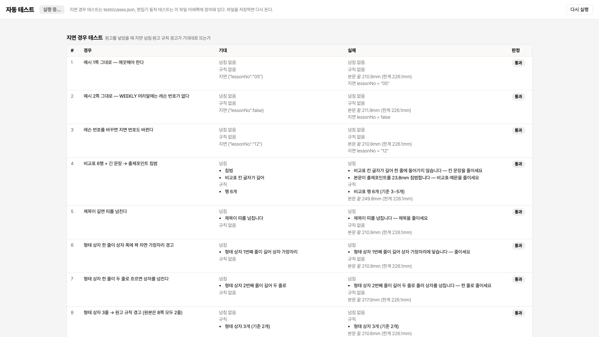
프로그램 만들기
프롬프트 7 · 8
레퍼런스는 링크로, 뺄 것은 따로 말합니다
07
디자인 다듬기
“https://designsystem.line.me/ 현재 양식 자체는 너무 좋아, 이 웹사이트에 디자인, 텍스트 스타일등을 참고해서 웹사이트를 심플하고 간결한 느낌으로 정리해줘. 단, 해당 웹사이트에 그린 컬러는 제외해줘”
08
다시 확인
“로컬링크줘”
프로그램 만들기
프롬프트 9 · 10 · 11
권한은 내가, 실행은 클로드가 합니다
09
배포
“현재 연결되어있는 구글 계정을 통해 clasp이용해서 배포해줘”
결과 프로젝트 생성 → 자동 테스트 → 업로드 → 배포. 같은 링크에 새 버전이 올라간다.
10
계정 권한
“api 켰어 실행해줘”
결과 구글 로그인과 API 켜기만 직접 하고 나머지는 맡겼다.
11
반응형
“반응형으로 만들어줘”
결과 태블릿·휴대폰은 하단 탭으로 편집과 미리보기를 바꾼다.
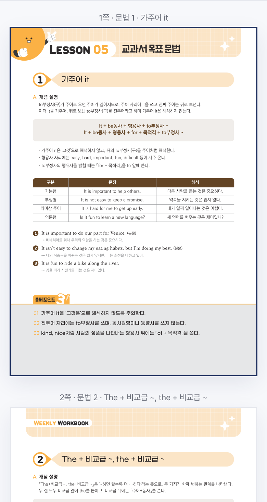
프로그램 만들기
프롬프트 12 · 13
마지막에는 만든 과정을 문서로 남깁니다
12
정리 · 공유
“지금까지 내가 너한테 요청한 내 대사들 정리해줄래? 결국은 내가 문법페이지 템플릿화이지만 큰 범위로는 중등 주간내신 혹은 고등 주간내신의 교재들의 모든 섹션을 이렇게 프로그램을 만들어서 제작할껀데 너에게 내가 요청한 작업 방식과 나의 대사들(나의 의도)를 pdf 페이지로 정리해줘. 이걸 보고 다른 직원들이 아 프로그램 이렇게 만드는 구나의 워크 플로우를 봤으면 좋겠어.”
13
대사만 나열
“마지막 페이지에는 그냥 대사만 순서대로 나열해줘. 나는 그 대사 흐름을 보고 싶어.”
의도를 말한다 → 비용을 묻는다 → 검토시킨다 → 짧게 결정한다 → 눈으로 확인한다 → 테스트가 통과하면 배포한다